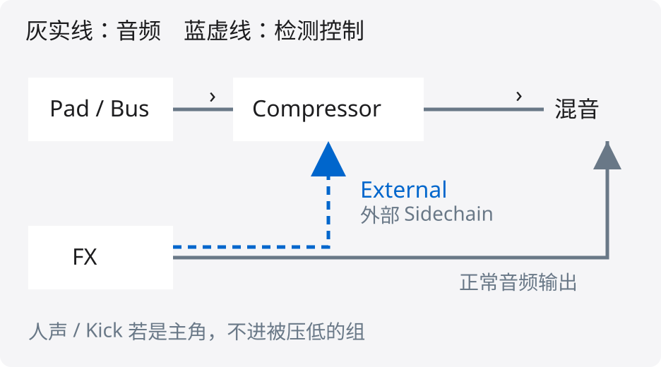
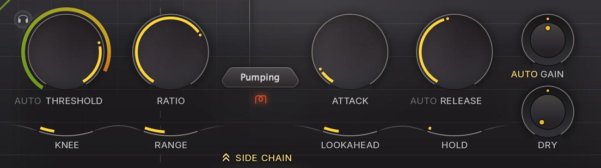
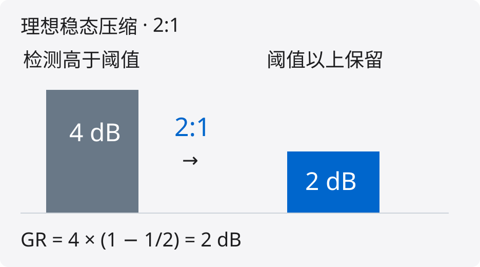
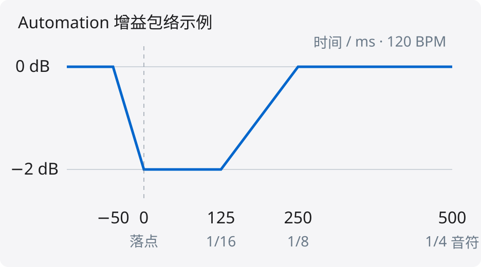
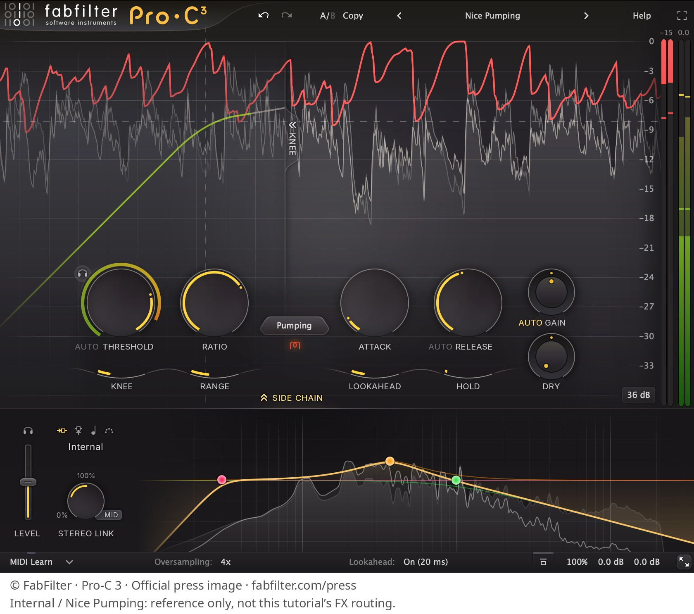

MIXING NOTES / FX PRIORITY
先分角色，再谈优先
FX 这次是主角，还是背景？
主唱第一句进入时，
FX 尾音可能才是该退后的那一方。
本篇 FX 指编曲音效轨，不泛指所有 Reverb / Delay 返回轨。
MIXING NOTES / FX PRIORITY
只动真正冲突的部分
先检查：出场时机、尾音长度、重叠层。
只发生一次 / 时窗确定
用 Automation 画出局部让位
重复出现 / 强弱会变
让 FX 触发重叠伴奏的 Ducking
只在某个频段打架
考虑动态 EQ，别把全频都压下
FX 尾音本身太长
先编辑 FX，而非牺牲整个伴奏
这些是条件分支，不是必须依次叠加的处理链。
MIXING NOTES / FX PRIORITY
侧链接对，才会让对
Compressor 放在需要退后的轨道。

外部 Sidechain 提供判断，
不把 FX 混入受控轨的主音频。
Pre-Fader / Post-Fader 会影响检测是否跟着 FX 推子变化。按实际 DAW 核对取样点，并监听检测信号。
MIXING NOTES / FX PRIORITY
2 dB，是怎么算出来的？

以检测高于阈值 4 dB 为例：
理想稳态向下压缩 · Hard Knee · Auto Threshold 关闭

GR 施加到主音频。
Attack / Release、Range 与软拐点等会影响实际衰减。
MIXING NOTES / FX PRIORITY
恢复，要跟着乐句
120 BPM：四分音符 = 500 ms
八分 = 250 ms · 十六分 = 125 ms

Release 设为 250 ms，
不保证 +250 ms 时完全恢复。
图中以 Automation 画出让位区间。用压缩器处理时，持续触发会影响恢复；听下一拍是否重新站住。
MIXING NOTES / FX PRIORITY
看懂控件，再接外部输入

以 Pro-C 3 为例，在 SIDE CHAIN 中
将 Internal 切换为 External。
在宿主中接入 FX 发送，
监听检测信号，确认路由正确。
MIXING NOTES / FX PRIORITY
十秒检查，听主角回来
01 转场前
FX 有没有交代即将发生的变化？
02 主角进入
歌词、节奏或主题是否保持完整？
03 下一拍
伴奏是否自然恢复，还是泄了气？
再做电平接近的旁路对比，
检查 Stereo 与 Mono。
若 FX 只靠更大声才成立，回查长度、音色和时机。目标是转场清楚、主角完整。
MIXING NOTES / FX PRIORITY
完整图文与可编辑源码
让位不是看轨名。
是看这一刻，谁在说重点。
github.com/DDDPG/
music-mixing-secrets
@misc{wang2026musicmixingsecrets,
author = {Kangdi, Wang},
title = {Music Mixing Secrets},
year = {2026},
url = {https://github.com/}
# {DDDPG/music-mixing-secrets}
}
技术依据：FabFilter Pro-C 3 / Pro-Q 4 官方帮助；Ableton Live 12 自动化手册。详细链接与推导见研究报告。
界面图片：FabFilter Pro-C 3 官方媒体资料
© FabFilter · fabfilter.com/press